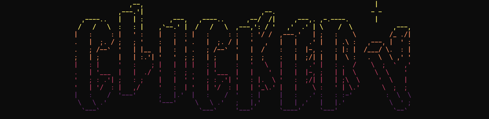

Working with

Clickery is an automation software designed to simplify the
process of automating user inputs, without requiring any coding
expertise. Developed in Python, Clickery offers a user-friendly
interface and a wide range of features to help streamline the
automation process.
In terms of functionality, Clickery offers a comprehensive set
of tools for automating user inputs. This includes features such
as mouse inputs as clicking, moving, and dragging, as well as
keyboard inputs as text entry, hotkey inserts and more features
like image detection. With Clickery, users can easily create
complex automation scripts that can be run with just a few
clicks.
Whether you're a seasoned developer or new to the world of
automation, Clickery is an invaluable tool for streamlining your
workflow and increasing productivity.
Getting Started
To get started with Clickery,
download the Clickery zip, extract it, open it on any terminal
OR clone repository with
git clone https://github.com/MZaFaRM/Clickery.git
and execute the following command in the terminal:
python setup.py
This will install all the required libraries to run the project.
Then, execute the following command to start the program:
python main.py
Mode of Input
After running the program, you will be prompted to choose the mode of input.
File Input
For file input, your JSON file must be formatted in the specified
way in order to be read by the program. It is not recommended to
write this file from scratch; it is always better to first record
your actions through manual input and copy and paste them from
history.json or history.db later. However,
you can manually write a file following these guidelines if desired.
General Guidelines
Your file input must be a list of dictionaries, where each dictionary represents an action. Each dictionary may or may not contain an ID.
| Action | Syntax |
|---|---|
| MOVE CURSOR |
|
| LEFT CLICK |
|
| RIGHT CLICK |
|
| DRAG CURSOR |
|
| ENTER TEXT |
|
| WAIT TIME |
|
| WAIT FOR IMAGE |
|
| WAIT FOR KEY INPUT |
|
| INSERT KEY |
|
| INSERT HOTKEY |
|
MOVE CURSOR
{'move': {'x': 935, 'y': 697}}
The key must be move, and the x and
y positions must be specified as shown in the
example. The top-left corner of the screen is the
(0,0) region, with x increasing as you
go right and y increasing as you go down.
LEFT CLICK
{'move': {'x': 935, 'y': 697}}
The key must be click, and the value
left.
RIGHT CLICK
{'click': 'right'}
The key must be click, and the value
right.
DRAG CURSOR
{'drag': {'x': 1031, 'y': 955}}
The key must be drag, and the x and
y positions must be specified as shown in the
example. The top-left corner of the screen is the
(0,0) region, with x increasing going
right and y increasing going down.
ENTER TEXT
{'write': 'Hello World'}
The key must be write and the value must be the text
you would like to write.
WAIT TIME
{'sleep': 1}
To pause the program for a specified amount of time, use the key
sleep and specify the desired time in seconds as the
value.
WAIT FOR IMAGE
{'image': 'C:/Users/images/image-to-search.png'}
To pause the program until a specified image appears on the
screen, use the key image and specify the file path
of the image as the value.
WAIT FOR KEY INPUT
{'wait_key': 1}
To pause the program until the user presses a key on the keyboard,
use the key wait_key. The value can be anything, as
it is ignored by the program.
INSERT KEY
{'key': 'shift'}
To insert a single key into the program, use the key
key and specify the desired key in lowercase and
without whitespace as the value.
INSERT HOTKEY
{'hotkey': ['ctrl', 'C']}
To insert a combination of keys as a hotkey, use the key
hotkey and specify a list of the keys in lowercase as
the value.
Example
[
{
"move":{
"x":1008,
"y":863
},
"id":1
},
{
"click":"left",
"id":2
},
{
"click":"right",
"id":3
},
{
"drag":{
"x":1007,
"y":864
},
"id":4
},
{
"write":"He110 W0r1D",
"id":5
},
{
"sleep":3,
"id":6
},
{
"image":"C:/Users/images/image-to-search.png",
"id":7
},
{
"wait_key":"shift",
"id":8
},
{
"key":"shift",
"id":9
},
{
"hotkey":[
"ctrl",
"x"
],
"id":10
}
]
Note : Only json files are supported for file
input
Manual Input
To record actions using manual input, follow these instructions:
MOVE CURSOR
To record the action of moving the cursor to a specific location,
hover over the location and input 1.
LEFT CLICK
To record a left click at the current cursor position, input
2. It is best used in conjunction with the
MOVE CURSOR or WAIT FOR IMAGE actions.
RIGHT CLICK
To record a right click at the current cursor position, input
3. Like the LEFT CLICK action, it is
most effective when used with MOVE CURSOR or
WAIT FOR IMAGE.
DRAG CURSOR
To record the action of dragging the cursor to a specific
location, hover over the location and input 4. The
cursor will click and hold at its current position, move to the
specified location, and then release.
ENTER TEXT
To record the action of entering text, input 5 and
enter the desired text in the dialogue box that appears.
WAIT TIME
To record a waiting period, input 6 and enter the
number of seconds to wait.
WAIT FOR IMAGE
To record a waiting period until a specific image appears on
screen, input 7 and select the location of the image.
This action has several additional features:
- Automatically moves the cursor to the center of the image if found on screen
- Waits until the image appears on screen
-
Can be used in conjunction with
LEFT CLICKorRIGHT CLICKfor additional functionality
WAIT FOR KEY INPUT
To record a waiting period until a specific key is pressed, input
8 and enter the desired key.
INSERT KEY
To record the action of inserting a specific key from the
keyboard, input 9 and enter the desired key.
To insert multiple keys at once, use the
INSERT HOTKEY action.
INSERT HOTKEY
To record the action of inserting multiple keys at once, input
0 and enter each key individually, then click
Submit. This is useful for actions such as
Ctrl+C or Ctrl+W.
DELETE LAST ACTION
To delete the last recorded action in manual input mode, input
-. In the Replace Action section (after
all actions have been recorded), this action will delete the
element with the specified ID.
Post-Recording Actions
If you input esc, all actions up to that point will be
saved in
history.json. These actions can be further modified by:
LOOP
Requested portions of the recorded actions can be repeated any
number of times by entering the desired number of loops in the
dialogue box that appears after you input the
ctrl key.
REPLACE
An action can be replaced with another one by entering the ID of the action to be replaced and the call of the action you would like to use as the replacement.
Tip:
Combining Replacing and Looping allows you to insert actions into your recorded sequence.
Finalization
After recording and modifying the actions, they can be started by
pressing the space key.
Things to Note:
-
A started execution can be exited with
ctrl+deletewhen terminal is not in focus. -
A started execution can be exited with
ctrl+c(Keyboard Interrupt) when terminal is in focus. - It can also be exited by moving the cursor to the corner of the screen.
- Other methods commonly used for exiting a program can also be used.
Saving the input
Every successful execution from the last
reset.py is saved in the
assets/database/history.db
in the history table, while the last recorded action is
saved in the
assets/json/history.json.
Development
This project was built with Python version 3.11.0. The following libraries are required to run the project:
-
keyboard
0.13.5 -
Pillow
9.3.0 -
PyAutoGUI
0.9.53 -
rich
12.6.0 -
tabulate
0.9.0 -
opencv-python
4.6.0.66 -
pyclean
2.2.0
File Reference Guide
setup.py
This Python file is responsible for downloading and installing all of the necessary libraries required to run the program successfully.
reset.py
This Python file is used to clear various elements such as history, database, pycache files, and converted images, ensuring that the program is running optimally.
requirements.txt
This file is utilized by setup.py to obtain a
comprehensive list of the libraries required for the program to
function correctly.
main.py
This is the primary program file, which should only be executed
after setup.py has been successfully run.
sample
This directory contains a variety of subprogram files, including:
helpers
These files are responsible for managing dialogue boxes, saving recorded input, and improving the clarity of dialogue boxes.
post_record
These files handle functions such as LOOP and
REPLACE
pre_record
These files assist in the process of recording user requests.
universal
This directory contains important data such as constant configurations and a list of possible user requests. The typing speed, clicking speed, and dragging speed for this project can be modified within the sample\universal\config.py file.
core.py
This is the second main file and plays a crucial role in the overall functioning of the program.
Database
This project utilizes sqlite3 as its database to
store all successful executions starting from the last execution
of the reset.py script. The schema for the database,
which can be found at
assets\database\history.db, is as follows:
CREATE TABLE history (
actions_id INTEGER NOT NULL,
JSON TEXT NOT NULL,
PRIMARY KEY (actions_id)
);
Should you wish to download sqlite3, you may do so
from the
official website. While downloading is not necessary for the proper functioning
of the software, certain features may not be available if you
choose not to do so.
Video Demonstration

Screenshots


License & Feedback
MIT License

Copyright (c) 2022 Muhammed Zafar M. M.
If you have any feedback, please reach out to me at
muhammedzafar.mm@gmail.com